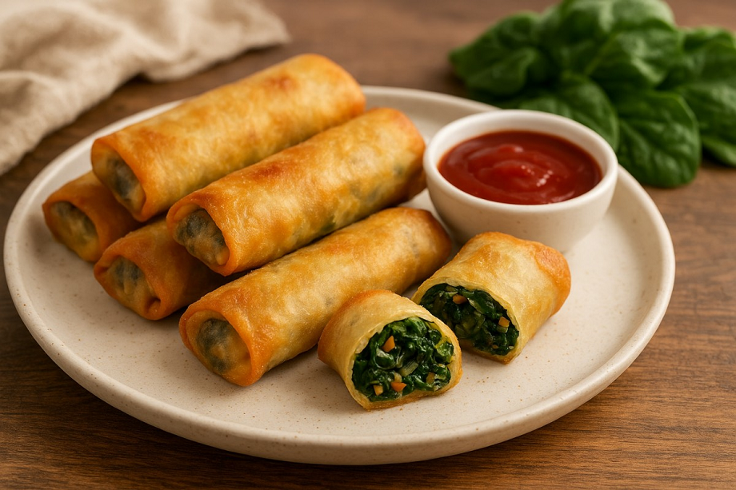
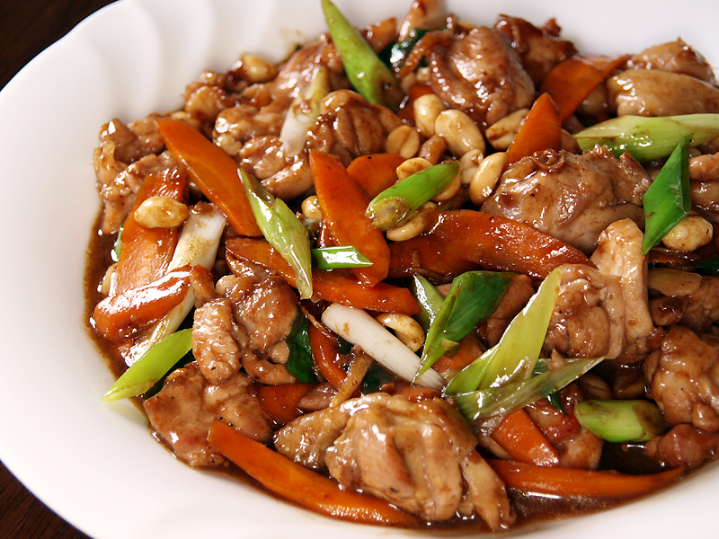
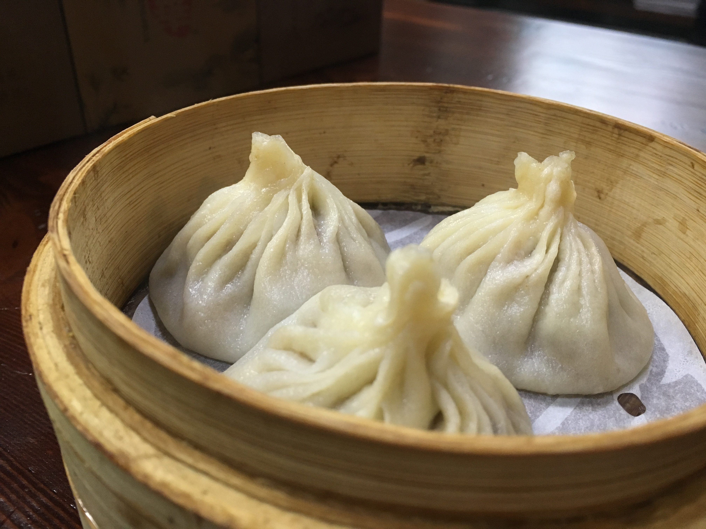
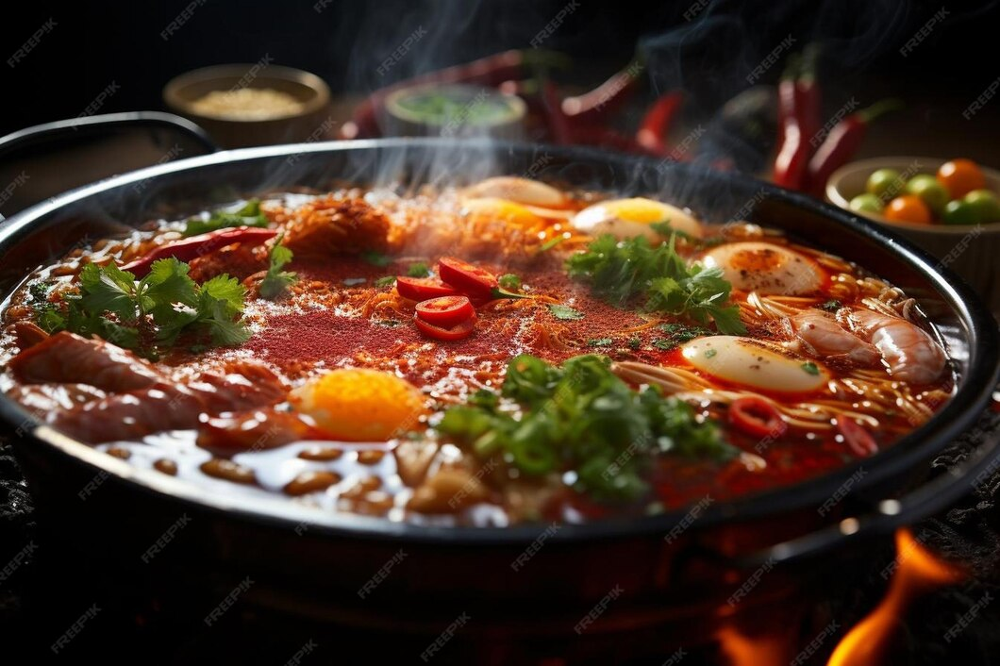
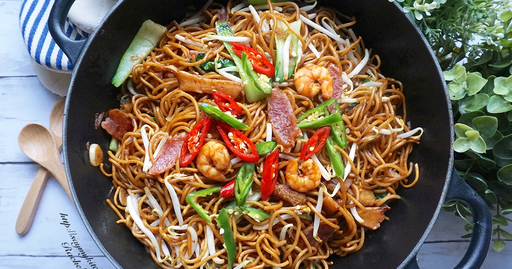

A golden brown roll with meat or vegetable filling, the spring roll is a staple of Chinese culture and is eaten to signify the coming of spring. The deep-fried snack has made it's way across the world as people fall in love with its flavour. It's often sent to relatives during Chinese New Year as a spring present and blessing.

Popular with both Chinese and foreigners, Kung-Pao Chicken is famous for its delicious diced chicken, peanuts and dried chili. It is believed to have been invented by palace guardian Ding Baozhen of the Qing dynasty. Kung Pao is actually named 'Gōngbǎo (Palace Guardian) jīdīng (Chicken Cubes)' in China.

Dumplings are probably the most iconic snack to come from Chinese culture. They are half-moon shaped, soft pieces of cooked dough often wrapped around a filling. Traditionally a northern food, dumplings made their way south and are used to celebrate the coming of New Year and Spring across the country.

The Chinese hotpot is perhaps one of the most unique dishes to come from their cuisine. Consisting of a simmering metal pot with broth at the center of a table and raw ingredients around it, the idea is everyone can add and cook whatever they like in the pot as they socialise with one another.

A delicious dish of stir-fried noodles with vegetables and sometimes meat or tofu, Chow Mein, which translates to "stir-fried noodles" is known around the world as a signature chinese dish. In culinary tradition, chow mein has grown to represent longevity, prosperity, and good fortune.